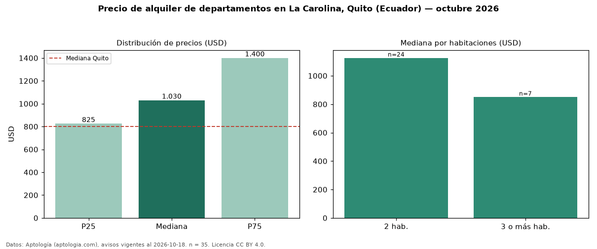

Precio de alquiler de departamentos en La Carolina, Quito (Ecuador) — octubre 2026
En La Carolina, Quito (Ecuador), la mediana de canon mensual de departamentos es USD 1.030, según 35 avisos vigentes. Frente a la mediana de Quito para departamentos (USD 800), queda 29 % por encima. Por metro cuadrado, la mediana es USD 10,22/m² al mes (n = 31 avisos con área), 41 % por encima de Quito (USD 7,22/m²). Con el precio por m² de venta del mismo segmento (USD 1.565/m²), la rentabilidad bruta implícita es 7,8 % anual (aproximación con medianas de ofertas distintas). El área mediana anunciada es 100 m². El segmento con más oferta es el de 2 habitaciones (24 avisos, mediana USD 1.125); pasar de 2 habitaciones a 3 o más habitaciones cambia la mediana −24 %. La mitad central de los avisos va de USD 825 a USD 1.400 (razón 1,7), una dispersión moderada. Datos: Aptología (aptologia.com), CC BY 4.0 — https://www.aptologia.com/ec/alquiler/quito/la-carolina. Archivos: PDF, CSV con las cifras y gráfica PNG.

| Avisos únicos | 35 |
|---|---|
| Percentil 25 | COP 825 |
| Mediana | COP 1.030 |
| Percentil 75 | COP 1.400 |
| Mediana por m² | COP 10 |
Fuente: avisos vigentes de portales inmobiliarios recopilados por Aptología, deduplicados (mínimo 30 avisos únicos por celda). Precios pedidos, no cerrados. Fecha: 2026-10-18.